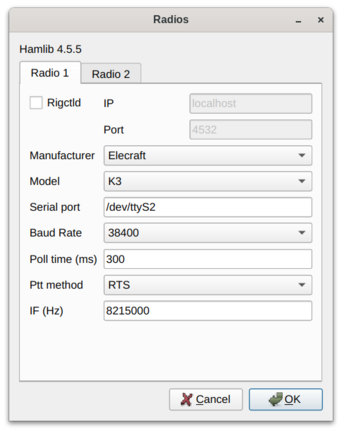
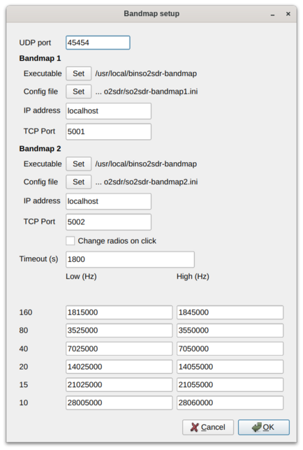

SO2SDR help file version 1.5.2
Installing SO2SDR: Linux
Under Linux, so2sdr needs to be compiled from source.
You will need the following libraries installed: Qt4, FFTW, hamlib,
and PortAudio.
These are available in most linux distributions.
- Unpack source: tar xzvof so2sdr-xxx.tgz
- By default, so2sdr will be installed in /usr/local/bin, and associated
data files will be placed in /usr/local/share/so2sdr. If you want to
change the location of the program, edit SO2SDR_INSTALL_DIR in common.pri
- qmake
- make
- (as superuser) make install
Windows
Run the installer. All program and data
files are in the chosen install directory,
no registry changes are made. To remove, run the "uninstall"
in the program directory.
Configuring SO2SDR
In so2sdr there are two types of configuration:
- Station settings : These are settings that
do not generally change between different contests. These
include station hardware,
location, etc. Station settings are loaded as soon
as the program is run. These settings are stored
in the so2sdr.ini file in the main configuration
directory for so2sdr (see below).
- Contest settings : These are settings specific
to each contest. They are only loaded once a contest
has been loaded from the File menu. They are stored
in .cfg files specific to each contest. Note that
in order to load a different contest, you must
exit and restart so2sdr.
Station Settings
-
User data directory
The first time the program is run it will create a directory to store
user settings. The default location is ~/.so2sdr (Linux) or
C:/Documents and Settings/Username/so2sdr (Windows).
-
Station data
The station dialog should be filled out next. It contains information
that usually does not change for different contests; this is
stored in the "so2sdr.ini" file in the user's directory. The
ini file is ASCII and can be edited by hand; be careful
making changes this way however.

- The grid square should be 4 characters and
is used to determine beam headings from your qth and the sunrise/sunset
times for your qth. These will be updated once you have loaded
a contest.
- Name, zones, state, and ARRL section are used
to fill out default exchanges in various contests.
-
Settings Dialog
This dialog contains various settings that affect program
behavior.

- Focus QSY Radio : switch audio focus to the second
radio while the other radio is sending.
- Audio and Transmit Focus Indicators : small "LED"
indicators that show the state of RX and TX focus.
- Send exchange and log (S/P) : In Search and Pounce
mode, if this setting is checked, the QSO will be immediately
logged after sending the exchange with the second Enter press.
If unchecked, an extra Enter is required after sending
the exchange to log the qso.
- Auto Send Mode : When running stations, if set to
"Auto", the program will automatically begin sending
the callsign entered and exchange once a certain number
of characters have been entered.
- Auto Send "Auto" Character Count : if using
Auto mode above, start sending when this number of
characters have been entered.
- Dueling CQ Delay : Duelling CQ between the two
radios is activated with Crtl- (Control Minus). This setting
adds an extra delay before switching radios.
-
Radio and SO2R switching setup

- Radio control uses the Hamlib library. The current version
being used is shown at the top. Note that under Windows, this
version number may be incorrect if the Hamlib DLL files have been
switched.
- Tabs 1 and 2 are for the two radios. The "Dummy" model
can be used for testing when no radio is attached. Note that
the PTT method setting is not currently used.
- Under Linux
serial ports are typically /dev/ttyS0, /dev/ttyS1, /dev/ttyUSB0, etc.
You may have to add your username to a particular group to access
these ports. Under Windows ports are COM1, COM2, ...
- When the radios are configured correctly, after
clicking "OK" in the radio dialog the "R1" and "R2"
indicators at the bottom of the main window
should say "ON" and turn black. Red here indicates a problem.
- Three different methods are supported for switch audio
and keying between the two radios:
- OTRSP : Open Two Radio Switching Protocol. This supports
USB-connected two-radio switches like the SO2RDuino box.
- Parallel port : This option toggles pins on the
parallel port. To use this in Linux, you need the PPDEV
kernel option, and your user name must be in the
correct group (usuall "lp") to access the port.
- microHam : The microHam series of SO2R switches.
-
Winkey
The only method supported to send CW currently
is via the Winkey chip. Note that winkey emulation
in a microHam box can be used.

- CW Output : if unchecked, no CW will be outputed.
- Paddle sidetone : enables winkey sidetone only
when sending with the paddle.
- Swap : swaps dit/dah paddle connections.
- CT space : uses slightly reduced spaces between words.
- After clicking OK, the "WK" indicator at the bottom
of the main window should say "ON" and turn black. Red
here indicates a problem.
- Iambic A/Iambic B/Ultimatic/Bug : choose paddle mode.
-
Bandscope settings
A unique feature of SO2SDR is the SDR bandmap integrated with
the logging program.
The program currently supports sound-card based I/Q
adapters like Softrocks and LP-PAN.
The Bandscope setup dialog is described below.

Contest Settings
-
Starting a new contest: see File menu.

- Start a new contest from the file menu. After choosing where to
save it, you can customize CW Messages and Contest Options.
If you have already operated this contest before, just make
a copy of the ".cfg" file. This way you will not need to
reconfigure CW macros and other settings again.
- The list of contests known by so2sdr is in the "contest_list.dat"
file (in /usr/local/share/so2sdr/ under Linux, and in the
same directory as the executable under Windows). Each line of
this file is of the format Displayed name, config file.
- Note that in some cases new contests can be easily added added to
this list if they have rules that are similar to existing
contests. You can create new contest by modifying an already existing
base config file. For example, both the NCCC Sprint and North American
Sprint use the built-in "SPRINT" rules, the only difference is in the
base config file (ns.cfg versus nasprint.cfg). The base config
file can for example then link to a different multiplier file.
-
CW Macros

- Separate messages can be programmed
for the F1-F12 keys in CQ and S&P modes, as well as Ctrl and Shift modified
function keys.
-
There are a number of special macros available, all of the form
{COMMAND}. In most cases I have set up a set of function
keys that works for my operating, although you might need
to adjust the exchange. Some special considerations:
- CQ Func F1: this will be sent in CQ mode when pressing enter
- Exc Func F1: this should be your callsign ({CALL})
- Exc Func F2: this should be the contest exchange
- Other: several special messages for exchange sent while CQing,
etc.
- See full list of available CW macros.
-
Contest options

Most of these settings are set by default by the rules
of the contest chosen. Be careful changing them.
- Mults by band: if checked, mults count on each band.
- Multimode : enable working multiple modes (not fully
implemented)
- Show mode : show the mode of each qso in the onscreen log.
- Show mults: show multipliers in the large "Mults" box. In some
case this is not wanted, for example when there are a large number
of multipliers (CQ WPX for example).
- Sprint mode: special program logic for the NA Sprint.
- Supercheck partial: checking enables the
display of possible callsigns from the supercheck partial
database (http://ww.supercheckpartial.com). These files should
be placed in the program data directory (/usr/local/share/so2sdr under
Linux).
- Call history : if this is enabled, so2sdr will display
contest exchanges saved in a history database file. This file
is a SQLITE database file and can be edited/examined using a
number of programs (I use sqlitebrowser).
- Append Call history : append exchange history information
to the database file as qso's are logged. You can also import
them after a contest using the option under the File menu.
- Dupe behavior: three possible settings depending on
how strict you want to be with allowing dupes.
- Sent exchange: this will go in the Cabrillo file as the
send exchange columns. Note that
these entry boxes do not currently use the same macro system
used by the CW Messages, so entering {STATE} for example will
not work. Use "#" for a sent serial number.
- Off times : check this to enable automatic calculation
of off time. You must fill in the start and end time/date
of the contest for this to work correctly.
Return to top
Key reference
- Radio QSY: enter a number corresponding to a frequency in
KHz in the callsign window. If the number is followed by a semicolon
(like 14005;), the frequency change will apply to the inactive radio.
- ctrl+Enter : logs qso with no dupe checking or exchange validation (be
careful). The qso may not be scored correctly.
- shift+Enter : logs qso without sending CW
- alt+Enter : start toggle mode. In this mode, each enter press toggles
back and forth between the two radios. Use this to call alternating cq's on
both radios.
- Backslash : log qso and send Quick QSL message
- PdDn : decrease CW speed
- PgUp : increase CW speed
- ctrl+PdDn : decrease CW speed on inactive radio
- ctrl+PgUp : increase CW speed on inactive radio
- alt+PgDn : in Auto CQ mode, decrease delay
- alt+PgUp : in Auto CQ mode, increase delay
- up/down arrow : switch between call and exchange windows
- ctrl+up : In S&P mode, tune to next higher detected signal on bandmap.
In CQ mode tune to the next higher signal on the INACTIVE radio.
- ctrl+down : In S&P mode, tune to next lower detected signal on bandmap.
In CQ mode tune to the next lower signal on the INACTIVE radio.
- ctrl+- : (Ctrl-Minus) Activates Dueling-CQ mode.
- alt+- : (Alt-Minus) Activates auto-send mode.
- Tab : enter S&P mode
- Esc : exit S&P mode; clear logging fields; reset Alt-D status
- minus (-) : mark frequency on active radio as a dupe, or clear
the current mark
- equals (=) : mark frequency on inactive radio as a dupe, or clear
the current mark
- left quote (`) : toggle audio stereo mode (split/non-split)
- alt+C : bring up Config menu
- alt+D : dupe check on 2nd radio
- ctrl+E : when QSO row is selected with the mouse, brings up
QSO edit dialog.
- alt+F : bring up File menu
- ctrl+F : search log for callsign fragment. ESC clears search results.
- alt+H : bring up Help menu
- alt+M : switch mult display mode
- ctrl+N : make a note
- alt+Q : start auto (repeating) CQ mode. While in Auto CQ, Alt-PageUp
and Alt-PageDn adjust the delay time between CQ's. Auto CQ sends F1 by default;
pressing F1 or F2 will change the message that is repeating. ESC or alt+Q
exits Auto CQ mode.
- alt+R : Switch radios
- ctrl+R : switch radios without killing cw.
- alt+S : Set CW speed. Followed by two numeric digits.
- ctrl+alt+S : take screenshot of main and bandmap windows.
Screenshot files are placed in the same directory as the log file.
- alt+W : bring up Windows menu
- ctrl+Z (in call/exchange entry field) : undo
Return to top
CW Message macros
- {CALL} : callsign
- {#} : qso number
- {UP} : increase speed by 5 WPM
- {DN} : decrease speed by 5 WPM
- {CANCEL} : cancel any previous speed change
- {R2} : send on other radio
- {R2CQ} : send on other radio, marked as CQ. If a call is entered, program will switch to other radio to answer CQ. ESC or a F1 CQ will clear this state.
- {STATE} : state
- {SECTION} : ARRL section
- {NAME} : name
- {CQZ} : CQ zone
- {ITUZ} : ITU zone
- {GRID} : grid
- {CALL_ENTERED} : contents of call entry window
- {TOGGLESTEREOPIN} : toggle parallel port pin for audio control. This macro should be used alone and will not work with other CW macros
- {CQMODE} : switch to CQ mode
- {SPMODE} : switch to SP mode
- {SWAP_RADIOS} : swap frequencies between radios
- {SWITCH_RADIOS} : same as alt-R
- {REPEAT_LAST} : repeats previously sent message
- {REPEAT_NR} : if the call entry line is not empty, send current qso #. If call entry line is empty, sends number sent for last logged qso.
- {CLEAR_RIT} : clear the RIT
- {RIG_FREQ} : send frequency of radio rounded to nearest KHz
- {RIG2_FREQ} : send frequency of 2nd radio rounded to nearest KHz
- {BEST_CQ} qsy current radio to "best" CQ freq
- {BEST_CQ_R2} qsy 2nd radio to "best" CQ freq
- | : insert 1/2 dit extra space
- {MCP}{/MCP} : send Microham Control Protocol commands
- {OTRSP}{/OTRSP} : send OTRSP Control Protocol commands
- {CAT}{/CAT} : send raw string to radio. This can be used
to trigger a variety of radio functions. Numbers placed inside of
< and > will be interpreted as hexadecimal bytes. Example: {CAT}SWT25;{/CAT}
will switch the RX antenna on the Elecraft K3.
- {CATR2}/{/CATR2} : same, except send to inactive radio
- {CAT1}/{/CAT1} : same, except send to radio 1
- {CAT2}/{/CAT2} : same, except send to radio 2
- {CALL_OK} : This will reset the check if the original call has been
corrected. Used when repeating the exchange to a station, it will prevent
the "Call Updated QSL" message from being sent when not needed.
Return to top
Operating notes
Running stations
SO2SDR uses the "Enter sends message" approach used by many other logging programs:
- Enter callsign, press enter. The CQ exchange is sent
- Enter exchange, press enter. The QSL message is sent
- repeat
The program tries to be intelligent in interpreting the entered
exchange. There needs to be a space between exchange elements in
most cases (123a is acceptable in Sweepstakes for the number/prec).
In most cases, you do not need to backspace to correct
an exchange mistake- the program will take the last valid exchange
on the line.
That the exchange must be "validated", or enter will not log
the qso. In case there is a problem, it is possible to "force log"
the qso- press ctrl-Enter instead of just enter. Be careful with
these cases, the number and position of exchange elements has to
match exactly in this case. These qso's may also be scored
incorrectly
Shift-Enter instead of Enter will also log the qso without sending any CW.
The Backslash key ("\") will log the qso and send the "Quick QSL"
message instead of the usual QSL message.
S&P
TAB enters S&P mode.
- type callsign. When enter is pressed, your call is sent
- enter exchange. When enter is pressed, you exchange is sent
- press enter again to log the qso. I am planning on making
this extra enter optional.
Using the bandmap
In the bandmap, the radio frequency is in the center at the red
line. A right mouse click will bring up several options:
- Zoom X1, Zoom X2: set scale of bandmap.
- Delete call: use to remove a call from the bandmap. Note that
the "-" and "=" keys can be used to remove a call.
- IQ Balance: open the IQ balance dialog. The bandmap uses strong
signals to correct gain and phase errors in the SDR hardware.
This correction will be saved when quitting the program.
If the "IQ" box is checked, the correction is applied; if the "IQ Data"
box is checked, new signals are used to improve the correction.
Options at the bottom of the bandmap window:
- Mark signals: this uses a peak detection algorithm to
try to determine where signals are on the band. This does not decode
any CW. Each detected peak is marked with a small black dot; clicking
on it will tune the radio to that signal. Ctrl-up and Ctrl-down
arrows can be used to tune the radio to the next signal up or down the
band. In S&P mode, they will tune the active radio; otherwise they apply to
the inactive radio.
- Signal level slider: adjusts sensitivity of peak detection
algorithm.
- IQ: correct I-Q balance errors
- IQ Data: collect data from received signals to improve I-Q balance
- Click filter: removes key clicks. Not very effective at
the moment
Left click: this will tune the radio to this frequency.
Left Click+drag in frequency scale: moves center of the display
When in S&P mode, pressing Space after typing a callsign will add
it to the bandmap. If the call is a dupe, it will be highlighted
in color on the bandmap. Using this trick, new signals become obvious
on the bandmap. It is of course possible that a station can be
replaced by another on exactly the same frequency. However, in practice
this does not happen very often--it is a much more probable that
unhighlighted signals are unworked stations. The Spot Timeout
setting is also critical here.
Editing log information
Previous qso's can be edited in the log window by clicking on
a field, editing the information, and pressing enter. Pressing escape
instead cancels the changes. The following fields
are editable: time, callsign, sent exchange, and received exchange. The
qso points (if displayed for that contest) will be recalculated
automatically.
To search for a call (or partial call) in the log, enter a call
fragment in the callsign window and press ctrl-F. ESC clears the
search results.
Marking qso's as invalid: there is no way to delete qso's from the
log. However, for each qso there is a checkbox. If this is unchecked, the
qso is marked as invalid and
completely removed from dupe checking and scoring, and will not
appear in the final Cabrillo output.
SO2R
For working stations on a second band while CQing on a different
band SO2SDR uses a system similar to TRLOG:
- Tune in a station on the second radio. By clicking on a
signal or using ctrl-up/down this is very easy to do.
- Press alt-D ; enter the callsign- it will show in the
2nd radio callsign window. The color is changed to indicate
this will be a second radio qso.
- When ready to call the station, hit Space. Now work
the station as usual. You may want to define function
keys to send messages on the other radio during the 2nd radio
qso.
- The program will return to the original radio when the
2nd radio qso is logged.
Note that if you tune by a station you are sure you have worked,
you can use the "-" or "=" keys to mark that frequency as a dupe
without having to enter the whole callsign. This can save a lot
of typing and allow one to check a 2nd band for new stations
very quickly.
Sprint/Sprint+SO2R
SO2SDR emulates the behavior of DOS TRLOG for the Sprint contest. This
behavior is enabled when the Contest Options->Sprint Mode is
checked. Note that in sprint mode, alt-D is disabled. The method of
SO2R used for the sprint does not use alt-D.
The Sprint is operated "backwards". This means that the active
radio is used to tune for stations (S&P), while the inactive radio is
used for calling CQ. I recommend reading the TRLOG description of
Sprint operating by N6TR, SO2SDR operates in the same manner. The
default CW macros are set up in the way described below if North
American Sprint or NCCC Sprint is selected as a contest.
To do S&P, leave the active radio in CQ mode, not S&P mode. It
is helpful to open one bandmap, which will automatically follow the
active band. When you find a station you want to
call, type the call and simply hit Space. The program will send your
call and switch to exchange mode. Copy the exchange and hit enter to
send your exchange. After the qso is logged, you will be back in CQ
mode, ready to send CQ when you press enter.
During the Sprint, the second radio is typically used to call CQ while you
are receiving the exchange on the active radio. This is set up by default
in macros F7 and F8. For example, F7 should be defined something like:
{R2CQ}TEST {CALL}
Suppose 80M is the active radio (frequency in bold) and you call CQ on 40M.
The color of the second radio entry box changes color to remind you that a
2nd-radio CQ is in effect. If someone answers the CQ, enter their call in
the 80M entry box. Do not change radios first: when the 2nd
radio CQ is active, the program will take the call from the "wrong"
radio, transfer it to the new radio, and switch radios. Now you
continue as before. During this qso you can again press F7 to call CQ
on 80M. If you have the bandmaps running, using the {BEST_CQ} or
{BEST_CQ_R2} macro is very helpful to quickly find an open frequency
to call CQ on in this situation.
Version 1.5.2
- fixed several bugs in the alt-D code. Some slight change
in how alt-D works- now if the radio is changed (alt-R or ctrl-R),
and alt-D call will be cleared, unless the alt-D qso is already in
progress (exchange entered).
- fix qso and mult info being shown on wrong radio with alt-D
- Call window has call, ESC pressed; was not clearing the mult
and worked information, entering S&P mode afterwards would show these
for the last call even with no entered callsign.
- fixed bandmap TX status bug: changing radios while CW was sending
would prevent TX icon from turning off. Now turns off TX also whenever
CW is canceled.
Return to top
Version 1.5.1
- Some minor bug fixes and code cleanup
- qextserialport code updated
- Build system revised, especially Windows build. See README
Return to top
Version 1.4.3
New features:
- New macro command {CALL_OK}
- Changed SDR setup dialog to tabbed form
- Many setup dialogs are now modal
Bug fixes:
- Prefill RS(T) as the received exchange for general logging/dxpedition.
Having a blank exchange here messed up the "Call updated QSL" message.
Return to top
Version 1.4.2
New features:
- New macro commands (CAT, CATR2, CAT1, CAT2) to send general string
to serial port.
Return to top
Version 1.4.1
New features:
- Callsign history
- To enable: define history file ("history.dat" or similar)
in Contest Options dialog. If this file does not exist, it
will be created in the user's configuration directory. This
file is a SQLite database and can be edited with any
SQLite tool.
- If "Call History" is checked in Contest Options,
exchange fields for the current contest will be filled
in from the history file. Stored fields include
General, Domenstic Mult, Name, State, ARRL Section,
Grid, and Number. If different contests share the
same type of exchange field, different history
files must be used.
- If "Append Call History" is checked, exchanges from
stations worked will be added during the contest.
- The history can also be updated from a loaded log using
"Update History from Log" in the File menu. This can be
used to build up a history file from old logs.
Bug fixes:
- The frequency range covered by the bandmap is now
shown in the bandmap title bar. When finding a clear
frequency (BEST_CQ), if the frequency range chosen in the bandmap
options is outside the range actually covered, the upper
or lower limits will be adjusted.
- Fixed bug in CQWW scoring.
- Fixed rate display again.
- Bug fixes with AutoCQ.
- Fix crashing bug in Cabrillo import.
- Improved Alt-D: mult/needed QSO information
remains visible on second radio.
- Fix segfault when exiting program without loading contest.
Return to top
Version 1.4.0
- Many new features added by NO3M
- Dueling cq mode
- Auto cq mode
- ESM Toggle (Alt Enter) to switch between ESM states on two radios
- Transmit radio switching using either Winkey, parallel port, or OTRSP
- New general settings dialog
- Autosend
- RX and TX focus indicators
- Bug fix in IQ balance plot; fit appears immediately. Increased averaging
of data
- Fix handling of unchecked calls
- Correct default cq finder limits for 40m
- Improve printout in telnet- remove non-printing characters correctly
Return to top
Version 1.3.3
- Fix bug in Sprint SO2R
- Add macro SWITCH_RADIOS; same as Alt-R
Return to top
Version 1.3.2
- Fix slow hamlib initialization under Windows
Return to top
Version 1.3.1
- Add support for two dupesheets. Note that the behavior will be
different if one or two dupesheets are open: if only one is open, it will
follow the band of the active radio.
- Add more documentation in Help about operating Sprint.
Return to top
Version 1.3.0
- Add support for OTRSP (Open Two Radio Switching Protocol)
devices. Tested with SO2RDUINO.
- Fixed bug in Sprint SO2R
- added ` key as additional control for audio stereo switching
- Add automatic off-time calculation
- Fixed ctrl-PgUp and ctrl-PgDn for second-radio cw speed change
- Started to add DVK code- this is not complete yet
Return to top
Version 1.2.5
- Sweepstakes exchange fix
- Fix Cabrillo import
Return to top
Version 1.2.4
Merge version 1.2.3git:
- Ctrl+Alt+S takes a screen shot of the main and bandmap windows
- Intial code to support multi-mode contests (not complete)
- Clean up some font inconsistencies
- Update CTY files, supercheck partial files
- Fix bug in alt-S setting of CW speed
- Fix Sweepstakes exchange parser
- change worked/needed mult display for contests where mults
count once (like Sweepstakes).
Return to top
Version 1.2.2
Merge version 1.2.2git:
- exchange verification is now done in real-time
- add CA QSO party and KS qso party
- support for working mobiles in qso parties
- add new Ontario RAC sections
- fix baud rate setting bug in radio interface
- add CATEGORY-STATION to IARU cabrillo output
- improved editing of qso's:
a) edit with double-click on log
b) ctrl-E brings up new detailed qso edit
- fix bug with ESC and CW message dialog
- fix bugs with keyboard grab
- fix bug where exchange would be sent, but focus left
on call box
- remove "About Qt" dialog. Add Qt version in "About So2sdr" dialog
- begin adding multi-mode capability. Multi-mode dupe checking not
complete however.
- add option to show mode of qso in log
- correct some fonts in main window
- update manual
- slight change in size of main window
- update SCP and CTY files
- fix bug with DX stations in Field Day
- fix bug for KP2, KL7, etc stations in Field Day
- allow entry of fractional value for KHz ie 7003.5
- add prefix check to WPX
- update for g++ 4.7 compiler
- add 48x48 pixel icon
- use pkg-config library for unix builds
- support setting mode from call field: type "USB", "CW", etc
Return to top
Version 1.2.1
- Can now log qso's on non-contest and VHF/UHF bands. These
will not show in the band breakdown however.
- More accurate bearings and sunrise/set times. If the stations'
zone is given in wl_cty.dat, the zone is used to estimate latitude
and longitude rather than the default entry for that country.
Depending on where the station is located in the zone and whether
CQ or ITU zones are bring used, the accuracy in the location will
vary. Note that entering your own call now gives your exact sunrise
and sunset (determined from your grid square).
- Fixed bug with sunrise/set and polar stations.
Return to top
Version 1.2.0
- Major internal changes to log. Log (".log" file) is now
stored using SQLITE database:
- Logs from older versions are not compatable: if you need to
open an older log, convert it to cabrillo first and then use
"import cabrillo"
- Log is now editable during the contest. Time, callsign, and
exchange fields may be edited by clicking/double clicking on the
appropriate field; Enter accepts changes and pressing Escape reverts
them.
- QSO's can not be deleted once entered. However, unchecking the
check box on a qso will remove it from the scoring and cabrillo output.
- After a log edit the log is re-duped and the multiplier total and score
is recalculated.
- To search for a call in the log enter a call (or partial call)
in the callsign window and press "ctrl-F". Search results that appear
can then be edited as above.
- Bandmap spots are saved to disk (file ".dat") when exiting
the program.
- Other bug fixes
Return to top
Version 1.1.11
- Fix problems with Windows build
- Check to create user directory before checking hamlib backends
- Updates to some default contests config files
- change escape behavior during alt-D
Return to top
Version 1.1.10
- Fix (I think) bug causing crash when rig keyed with paddle
and only 1 bandmap active
Return to top
Version 1.1.9
- new feature in bandmap: dragging on frequency label field will
move the central frequency
Return to top
Version 1.1.8
- switch to Portaudio callback API. DSound API (and maybe others)
should now work in Windows
- each audio device marked with a check if it supports the
required sample rate and format
- simplify Portaudio error message popup windows
- show ASIO control panel if an ASIO device is selected
- {CLEAR_RIT} works at least with Elecraft radios
Return to top
Version 1.1.6
- update MASTER.DTA and CTY files
- add highlight showing bands in use to breakdown
- fix bugs with exchange prefill
- fix bugs in IARU contest
Return to top
Version 1.1.3
More bug fixes: see CHANGES file.
Note that you probably will not be able to use the {CLEAR_RIT} macro:
in hamlib there is currently no way to clear the RIT without turning it
off completely.
Return to top
Version 1.1.2
Bugfix release.
Return to top
Version 1.1.0
Changes:
- Now uses hamlib for radio control, so any radio supported by hamlib should
work. Note that for correct K3 support, a relatively recent (at least 1.2.xx)
version is needed. Older versions do not support needed K3 features. I do not
know how well other radios will work.
- Under linux, parallel port support now uses the kernel module PPDEV and
/dev/parport0, etc. The program no longer needs to be setuid root, but
you must be in the lp group.
- Major changes in the multi-threaded aspects of the program. Threads
were not functioning correctly before.
- Ok/Cancel should function correctly in setup dialogs.
- Transmit status now determined from winkey rather than polling
radio.
Return to top
Version 1.0.0
Supported hardware:
Radios:
SDR bandscope:
- I/Q soundcard based (Softrock, LP-PAN, etc)
Miscellaneous:
- Winkey
- headphone, radio switching: parallel port
Issues and limitations:
- log is not editable; make a note (Ctrl+N) if a qso is logged
incorrectly and fix it in the cabrillo
- After opening a contest config file, you must exit and
restart so2sdr before opening another contest
- bandmap entries are not saved when quitting the program
- key click filter is not very effective
- Linux: the program is setuid root to enable parallel port
access. Root access is dropped after the parallel port is opened,
so the port choice can't be changed later.
- Windows: only MME soundcard API is working
- some issues with keyboard focus when opening menus; may need to
disable keyboard grab when changing cw messages or other settings
- support for SSB is limited
- sunrise/sunset times shown are computed from the latitude
and longitude listed in wl_cty.dat. They are not very accurate for
large countries.
- no multi-operator support
- external packetclusters can be connected to; due to the limited
frequency resolution in packetcluster spots
and frequency errors, this does not work very
well for highlighting stations on the bandmap
- probably lots of bugs...
Return to top